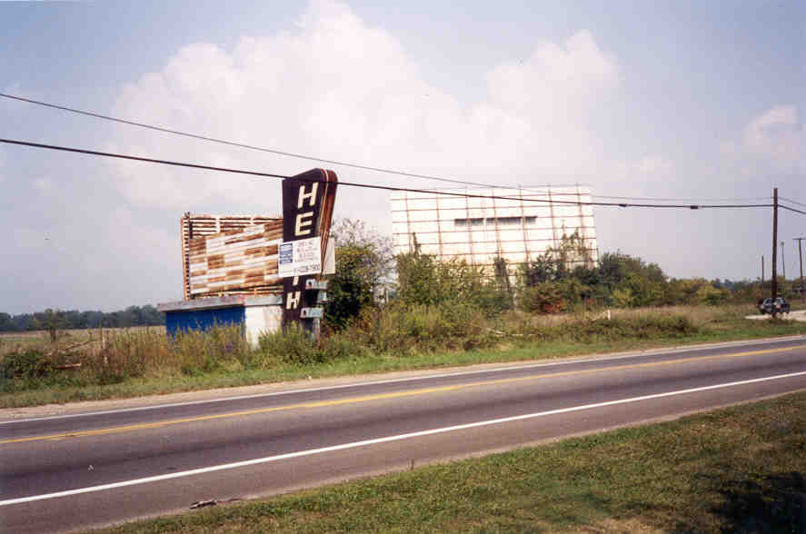
Until recently, Columbus and central Ohio fared well in the drive-in game. Only since 2001 have the last few begun to pack it in for good--but at least the 40 East Twin and Kingman drive-ins showed movies into the twenty-first century. In some places the theaters weren't so lucky; the Heath Drive-In on Route 79 in Licking County is one of the casualties.
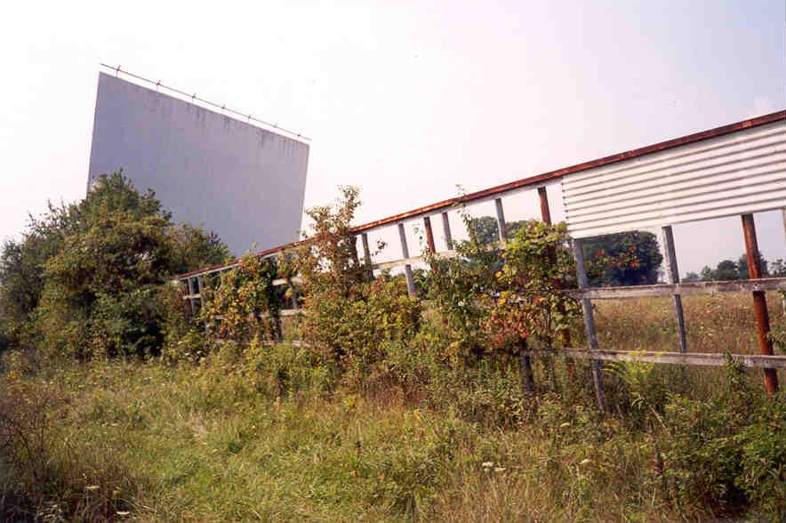
Located just south of Heath, I first noticed this place about four years earlier, and came back to check it out in early August of 2000. The sign has a certain retro look to it--fitting, since the drive-in opened in 1953. It was a single-screen drive-in which used both radio and speaker sound, as most of them do. For decades it was a huge draw in Licking County, showing movies on three different screens (the first fell during construction, and the second fell to high winds). Today the tattered screen's tilt is more precarious and the rows where people parked are completely overgrown with weeds. The poles are still there, but the speakers are long gone.
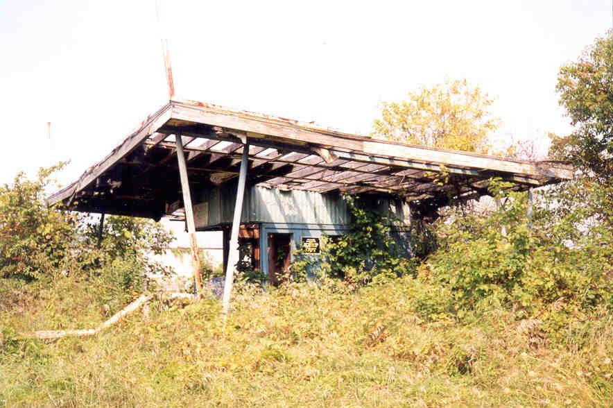
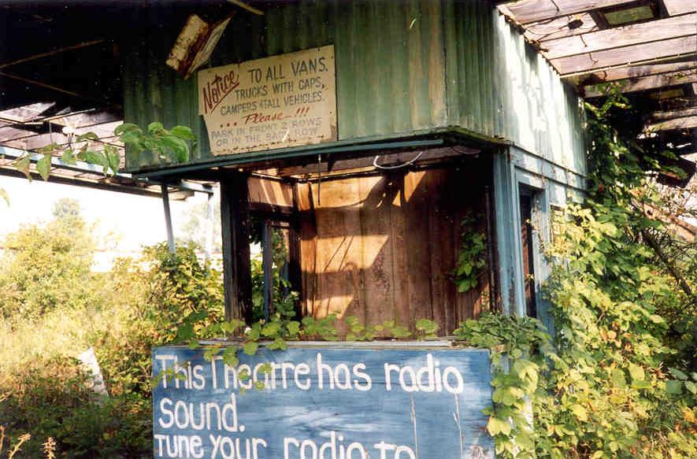
The driveway into the theater is just as overgrown as the lot itself, but there is a gravel road which goes back to some houses. I parked beside the old box office and slipped through the blinder wall.
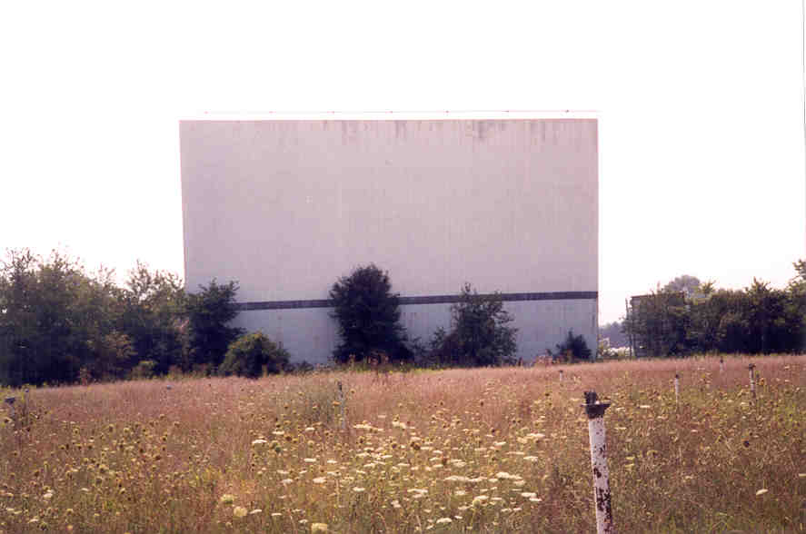
At the rear of the field is the old concession stand, a wooden building with a saggy overhang where people used to line up to get their popcorn. For some reason this strikes me as very retro-1950s.
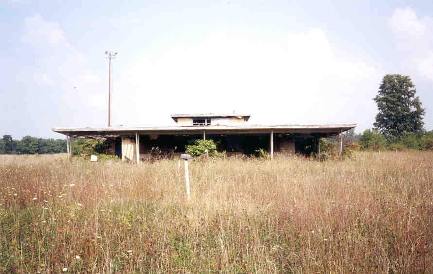

Inside it looked like they might have allowed people to walk through the concession stand at one time, since there was a long counter behind which the food was prepared. Also remaining inside was just about every piece of equipment they used for cooking: grill, soda fountains, hot dog warmer, and, of course, the popcorn popper. I'd like to take this opportunity to advise that you never, ever eat a movie theater hot dog. I worked at two theaters. I know.
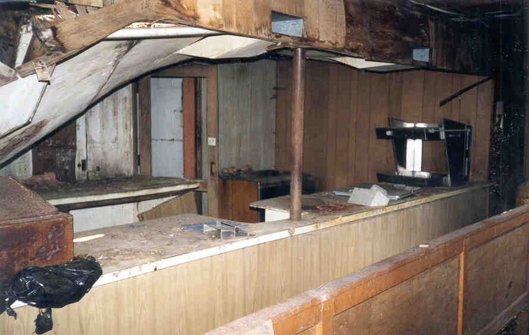
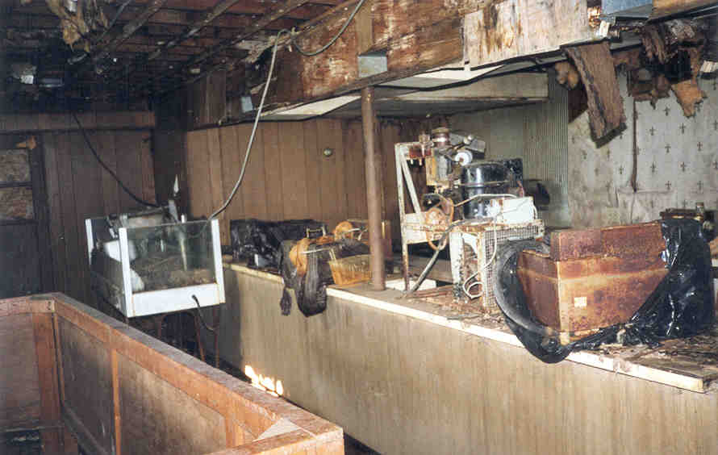
In the back were a couple of small rooms, one with a big sink--probably for washing pots and pans. Off of this a narrow staircase led up to the second floor.
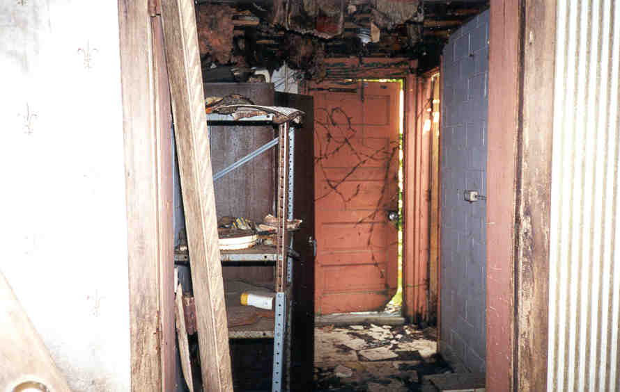
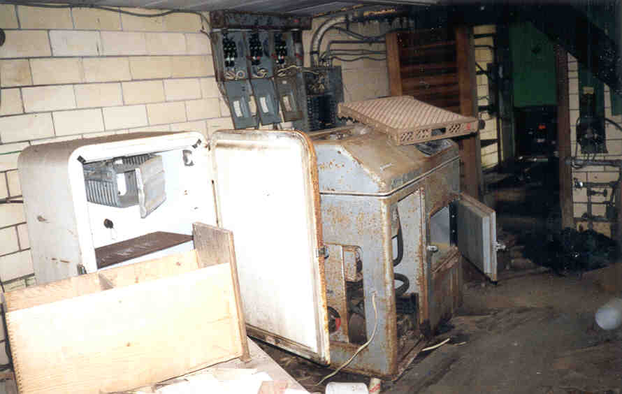
On the second floor I found myself in the projection room. The mount for the projector was still there, as was the projectionist's chair, and even his toilet--apparently they don't want him to leave his post. With three full-length movies to show each night, that's a lot of reel changing. A rusty movie reel rack was against the back wall, with each vertical slot numbered for quick access.
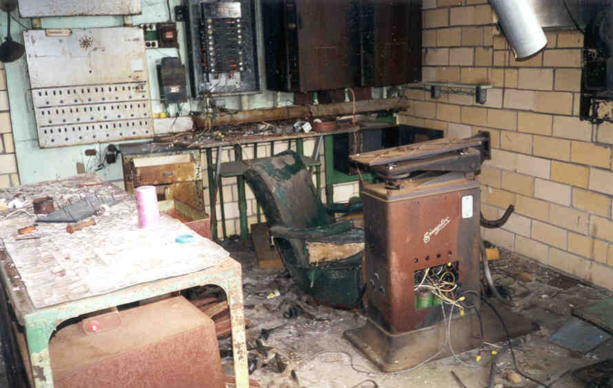
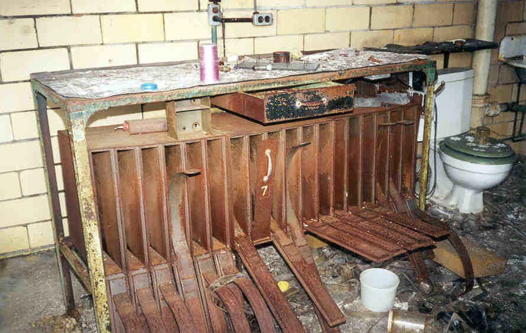
I've done projection, and it can be a bitch. I remember when I was showing The Waterboy, and I put the third reel on right after the first. They're just persuading Adam Sandler to join the team, and then all of a sudden he's winning the big game.
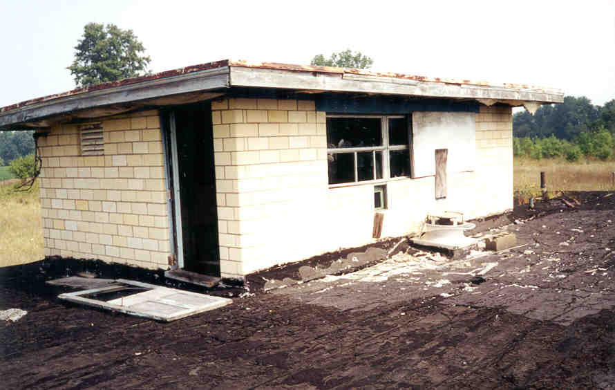
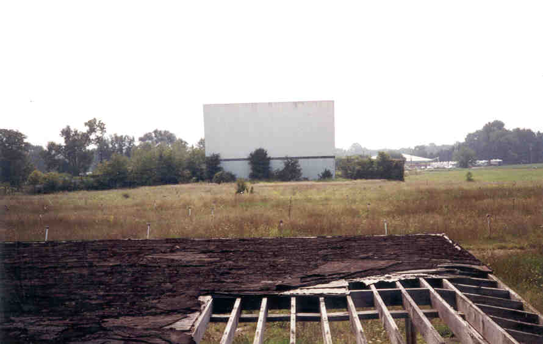
Although it lacks the labyrinthine qualities of many of the abandoned buildings I've explored, the Heath Drive-In ranks as one of my all-time favorites. There's something about it; it's got character. It'd be nice to see somebody buy it and reopen it, maybe restore that marquee sign out front, but they'll probably knock it down to build condominiums or something. I hope it remains for a long time.
Unfortunately, it may not. The land it sits on is up for sale as of December 2003. This article from the December 7 Newark Advocate describes the plight of Ohio drive-ins in general and the Heath in particular. Keep your fingers crossed on this one.
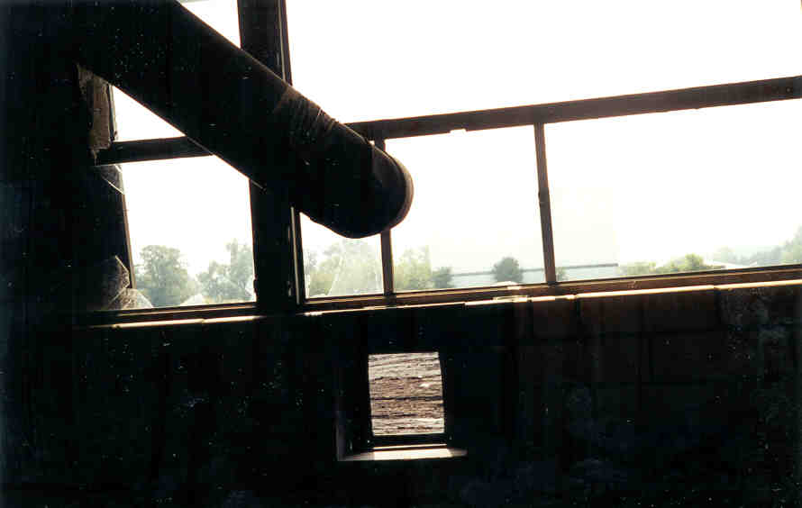
Newark Advocate article: "Drive-In Drama"
Ohio's Forgotten Drive-Ins
40 East Twin Drive-In
The Heath Drive-In
Hocking Theater Drive-In
Kingman Drive-In Theater
The Lake Drive-In
The Leatherwood Drive-In
The Linden Air Drive-In
The Show Boat Drive-In
The Skyline Drive-In

Back